Reading Comprehension Worksheets
Informational text as a cloze passage with word bank, a QR-code listening task with free audio, and a word search – 5 pages with answer keys.
4,658 resources
Subject
Grade
By grade: 1st Grade · 5th Grade · 9th Grade
Łódź – Italian Reading Comprehension Worksheet (Scheda): Cloze & Listening

ß – Italian Reading Comprehension Worksheet (Scheda): Cloze & Listening
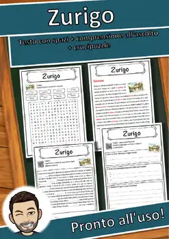
Zurigo – Italian Reading Comprehension Worksheet (Scheda): Cloze & Listening
Zuccheri – Italian Reading Comprehension Worksheet (Scheda): Cloze & Listening

Zirconio – Italian Reading Comprehension Worksheet (Scheda): Cloze & Listening

Zinco – Italian Reading Comprehension Worksheet (Scheda): Cloze & Listening
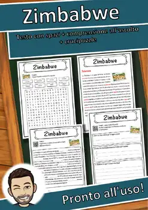
Zimbabwe – Italian Reading Comprehension Worksheet (Scheda): Cloze & Listening
Zeus – Italian Reading Comprehension Worksheet (Scheda): Cloze & Listening

Zeuge – Italian Reading Comprehension Worksheet (Scheda): Cloze & Listening
Zelt – Italian Reading Comprehension Worksheet (Scheda): Cloze & Listening
Zeit – Italian Reading Comprehension Worksheet (Scheda): Cloze & Listening

Zebra – Italian Reading Comprehension Worksheet (Scheda): Cloze & Listening

Zea mays – Italian Reading Comprehension Worksheet (Scheda): Cloze & Listening
Zar – Italian Reading Comprehension Worksheet (Scheda): Cloze & Listening
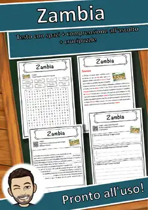
Zambia – Italian Reading Comprehension Worksheet (Scheda): Cloze & Listening
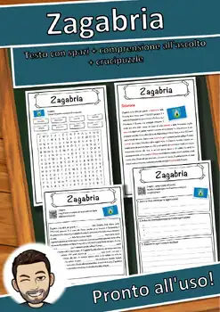
Zagabria – Italian Reading Comprehension Worksheet (Scheda): Cloze & Listening

Yves Klein – Italian Reading Comprehension Worksheet (Scheda): Cloze & Listening

Yom Kippur – Italian Reading Comprehension Worksheet (Scheda): Cloze & Listening
Yoga – Italian Reading Comprehension Worksheet (Scheda): Cloze & Listening

Yo-yo – Italian Reading Comprehension Worksheet (Scheda): Cloze & Listening
Yeti – Italian Reading Comprehension Worksheet (Scheda): Cloze & Listening

Yen – Italian Reading Comprehension Worksheet (Scheda): Cloze & Listening
Yemen – Italian Reading Comprehension Worksheet (Scheda): Cloze & Listening
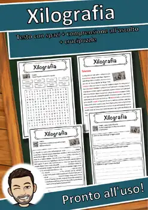
Xilografia – Italian Reading Comprehension Worksheet (Scheda): Cloze & Listening

Xilofono – Italian Reading Comprehension Worksheet (Scheda): Cloze & Listening
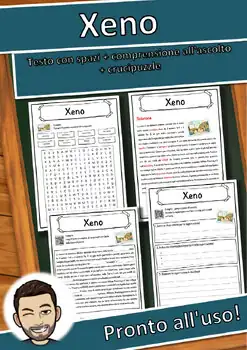
Xeno – Italian Reading Comprehension Worksheet (Scheda): Cloze & Listening
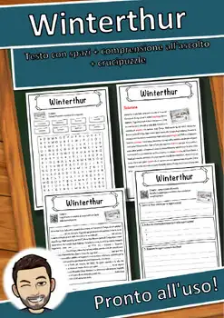
Winterthur – Italian Reading Comprehension Worksheet (Scheda): Cloze & Listening

Wilderness – Italian Reading Comprehension Worksheet (Scheda): Cloze & Listening
West – Italian Reading Comprehension Worksheet (Scheda): Cloze & Listening

Wellness – Italian Reading Comprehension Worksheet (Scheda): Cloze & Listening
Wellington – Italian Reading Comprehension Worksheet (Scheda): Cloze & Listening

Watt – Italian Reading Comprehension Worksheet (Scheda): Cloze & Listening
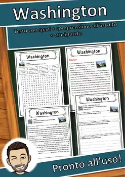
Washington – Italian Reading Comprehension Worksheet (Scheda): Cloze & Listening

Waschbär – Italian Reading Comprehension Worksheet (Scheda): Cloze & Listening
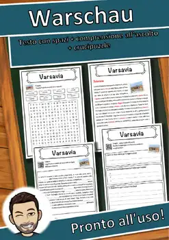
Warschau – Italian Reading Comprehension Worksheet (Scheda): Cloze & Listening
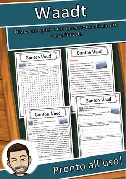
Waadt – Italian Reading Comprehension Worksheet (Scheda): Cloze & Listening

Vuoto – Italian Reading Comprehension Worksheet (Scheda): Cloze & Listening
Vulcano – Italian Reading Comprehension Worksheet (Scheda): Cloze & Listening
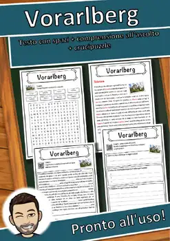
Vorarlberg – Italian Reading Comprehension Worksheet (Scheda): Cloze & Listening

Volk – Italian Reading Comprehension Worksheet (Scheda): Cloze & Listening

Vite – Italian Reading Comprehension Worksheet (Scheda): Cloze & Listening

Vitamin – Italian Reading Comprehension Worksheet (Scheda): Cloze & Listening

Vita – Italian Reading Comprehension Worksheet (Scheda): Cloze & Listening

Virus – Italian Reading Comprehension Worksheet (Scheda): Cloze & Listening

Violino – Italian Reading Comprehension Worksheet (Scheda): Cloze & Listening
Viola – Italian Reading Comprehension Worksheet (Scheda): Cloze & Listening

Vino – Italian Reading Comprehension Worksheet (Scheda): Cloze & Listening
Vilnius – Italian Reading Comprehension Worksheet (Scheda): Cloze & Listening
No resources found – try a different search term or filter.